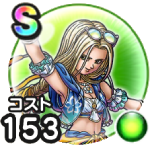

水着ミレーユ
あぶない水着イベント25こころ最大コスト+4スキルの体技ダメージ+8%とくぎHP回復効果+8%水系へのダメージ+3%水系への耐性+3% / 9.0点
くわしい特徴
【ランク特殊効果】 こころ最大コスト+4スキルの体技ダメージ+8%とくぎHP回復効果+8%水系へのダメージ+3%水系への耐性+3%

あぶない水着イベント25こころ最大コスト+4スキルの体技ダメージ+8%とくぎHP回復効果+8%水系へのダメージ+3%水系への耐性+3% / 9.0点
【ランク特殊効果】 こころ最大コスト+4スキルの体技ダメージ+8%とくぎHP回復効果+8%水系へのダメージ+3%水系への耐性+3%